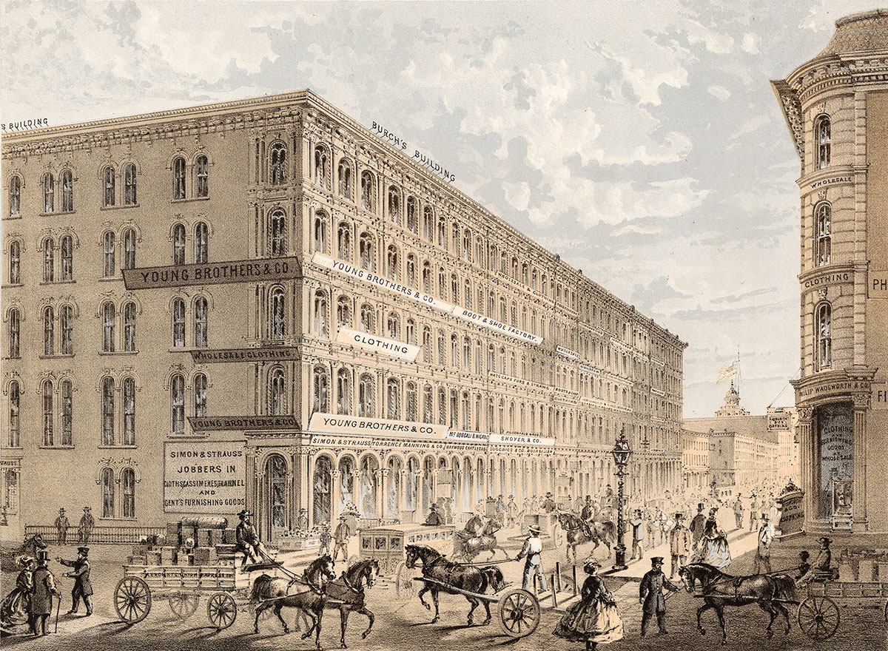
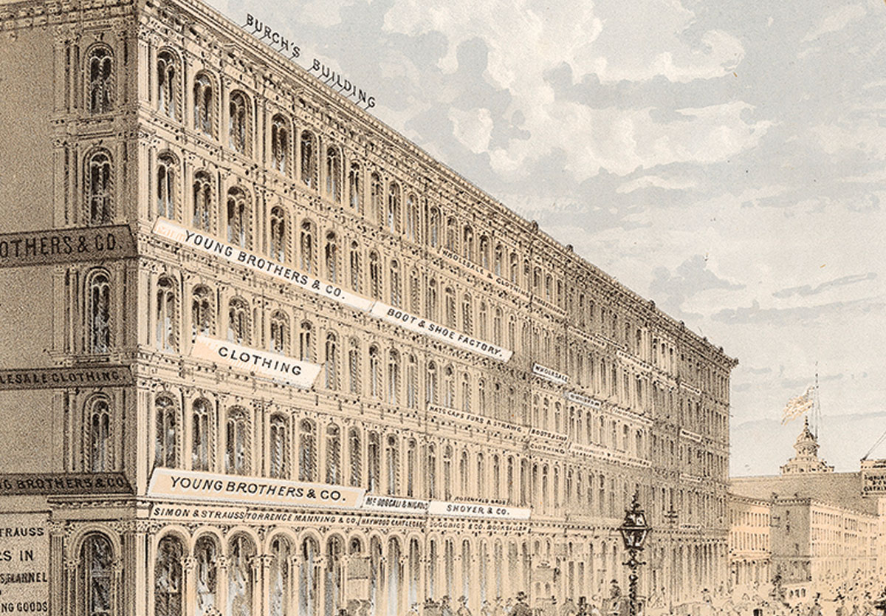
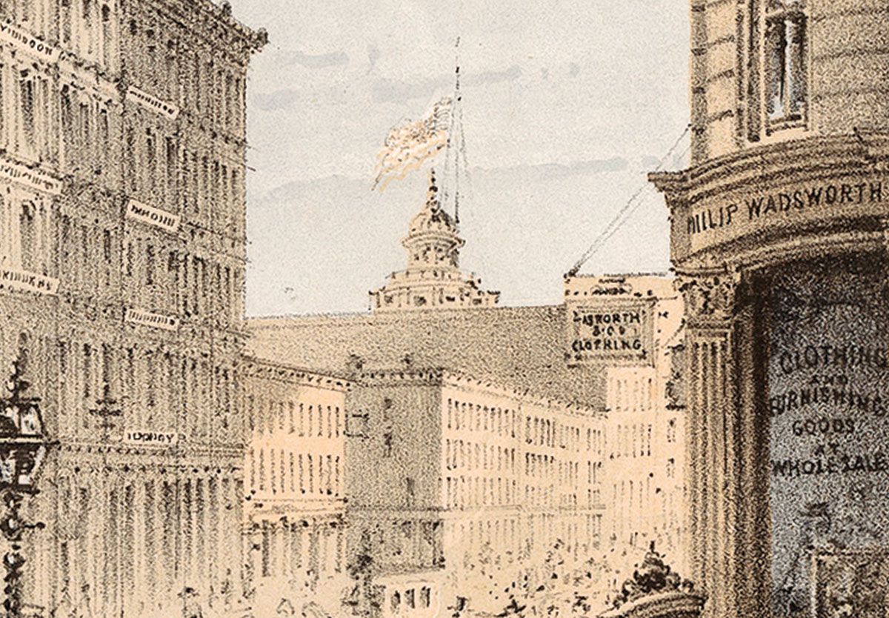
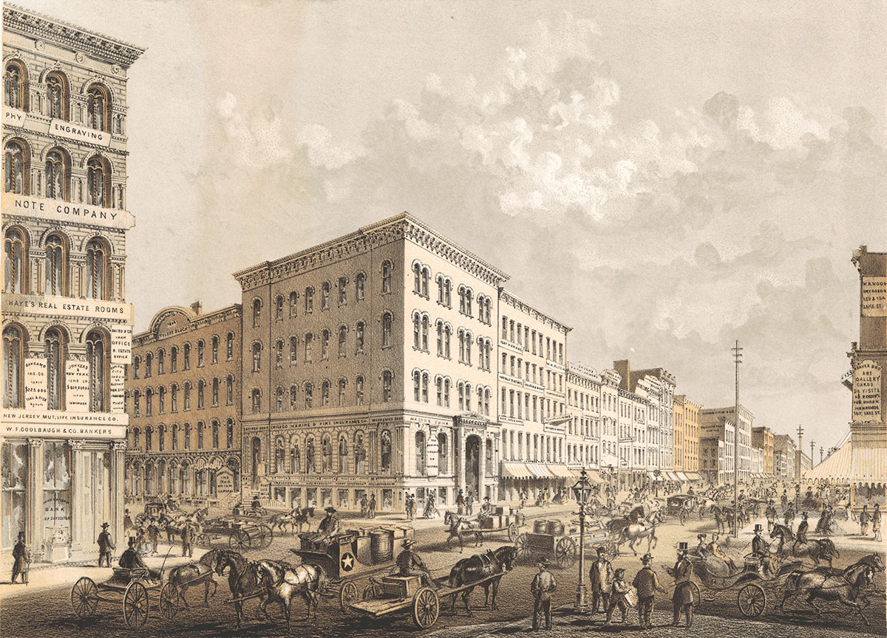
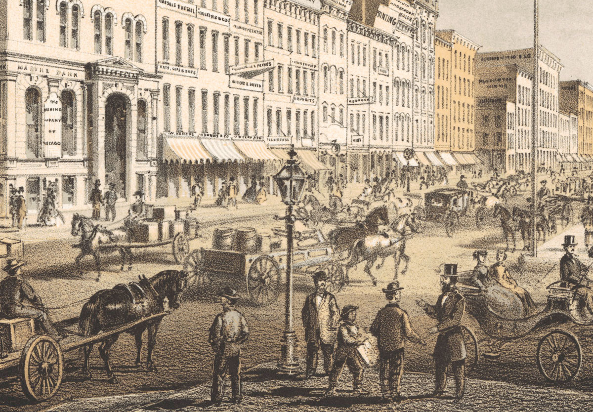
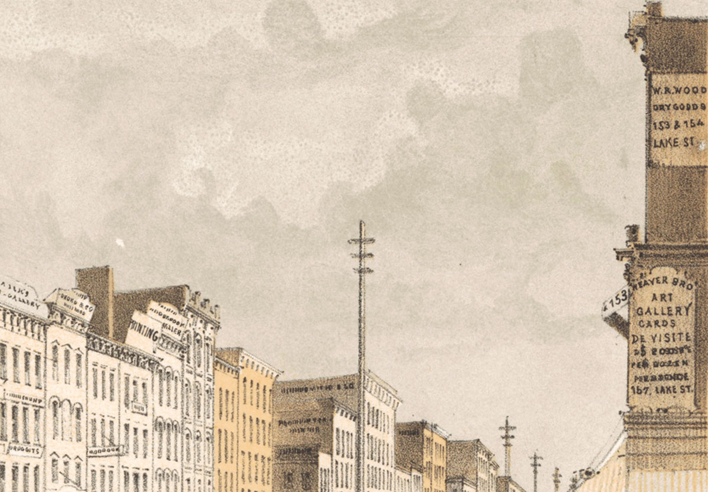
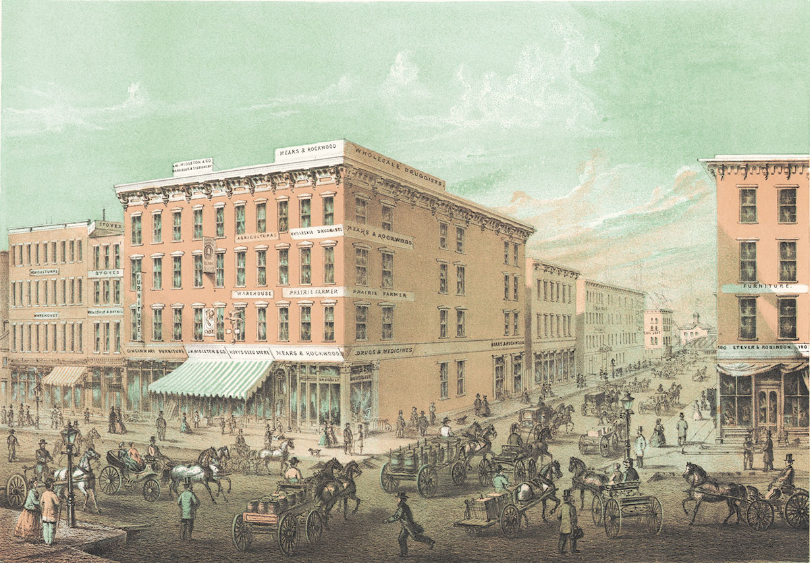
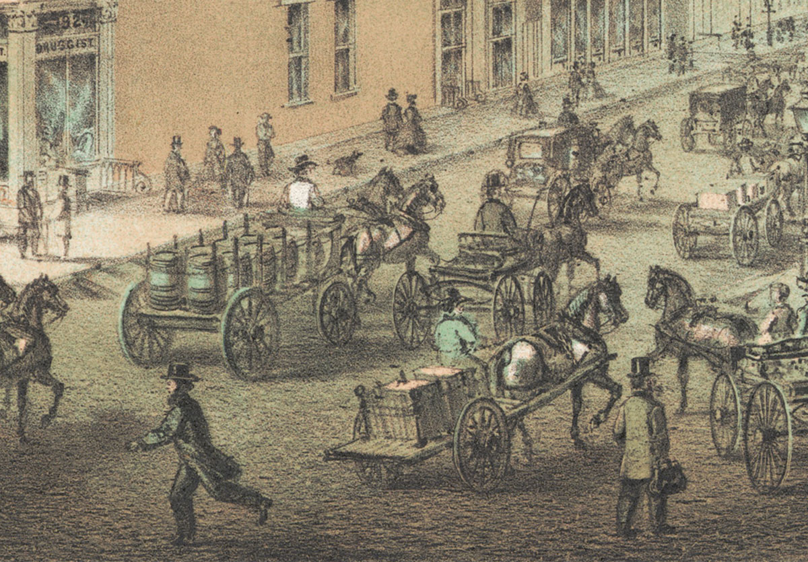

Tour The South Side
Take a short journey to Chicago’s up-and-coming South Side.
Chicago University
-

Chicago University
Chicago’s first university is located at Cottage Grove Avenue and Thirty-Fifth Street. Built on ten acres of land donated by Senator Stephen A. Douglas (who served as its first president), the school opened to students in 1858 and dedicated its main building one year later.
iChi-63105
-

Students
A small but growing number of students attend Chicago University. They take regular college courses or pursue programs in medicine and law. The law school opened on July 22, 1859.
iChi-63106
-

Main building
The well-known Chicago architect William W. Boyington designed the university’s Gothic-style main building at a cost of $200,000. The building’s 156-foot tower dominates the surrounding landscape.
iChi-63107
Park Row
-

Park Row
Few streets in Chicago are lovelier than Park Row. Its new, handsome homes and peaceful streets make the South Side a most attractive place to live. A nearby rail line provides residents with easy access to and from the city.
iChi-63120
-

South Side
The South Side is home to a small community of free black citizens. Most of them arrived before the Civil War and now work as domestic servants for wealthy white residents.
iChi-63121
-

Rail line
The Illinois Central Railroad stops near Park Row en route to and from the Great Central Depot. Although convenient, the rail line creates dirt and noise in an otherwise tranquil setting.
iChi-63122
Soldiers’ Home
-

Soldiers’ Home
This facility near Thirty-Fifth Street and Cottage Grove Avenue cares for hundreds of wounded Union army veterans. It was built with funds raised by the 1863 and 1865 Sanitary Fairs. The Illinois Central rail line runs in front of the building.
iChi-61959
-

Illinois Central
Senator Stephen A. Douglas of Chicago sponsored the 1852 Congressional bill that established the Illinois Central Railroad Company. Douglas died in 1861, and his tomb is near the Soldiers’ Home.
iChi-61959d1